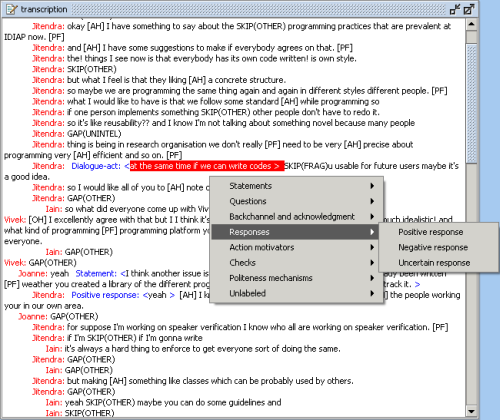

This section contains instructions how to create, delete and change dialogue act annotations using the DA Annotation tool.
The first step in creating a dialogue act annotation is a selection of the text segment in the Transcription Area which corresponds to the dialogue act.
You select a text fragment in the Transcription Area by clicking with the left mouse button at the start position and dragging to the end position. If you click in the middle of a word, the selection will be expanded to include the whole word.
The selection may contain only speech fragments of a single speaker. Speech fragments of the other speakers will be omitted from the selection. Red highlighting is used to mark the current text selection in the Transcription Area.
The selection cannot contain the text segments of the other already annotated dialogue acts.
After the selection is made, press the 'D' key or press the New DA button in the Dialogue Act Editor in order to create a new dialogue act element for the selected speech fragment. The dialogue act popup list will appear in the Transcription Area (Figure 1). Select a dialogue act type from the dialogue act popup list. The selected DA type and the speech fragment will be displayed in the Dialogue Act Editor as well as in the Transcription Area. If the dialogue act type is not selected the current selection in the Transcription Area will be enclosed in brackets and marked with "Dialogue-act" string. This means that the dialogue act boundaries are determined and the dialogue act is created but the type of the dialogue act is not determined. The selection of the DA type can be done additionally by pressing the button Type in the Dialogue Act Editor and selecting the dialogue act type from the list.

Figure 1: Creating DA annotation
For each person that belongs to the addressee group, select the corresponding checkbox. If the addressees of the dialogue act are all meeting participants, press the ALL button to select all checkboxes. The checkbox, which corresponds to the speaker of the dialogue act, is automatically disabled. This prevents that the speaker of the dialogue act is at the same time the addressee of the dialogue act.
Select the dialogue act that you want to change by clicking with the left mouse button on the dialogue act representation in the Transcription Area (e.g. the dialogue act type or brackets which enclose the range of the dialogue act)
The currently selected dialogue act is represented in the Dialogue Act Editor.
Changing the selected dialogue act element
The selected DA element can be changed in three ways: changing the type, changing the range and changing the value of the addressee attribute.
Changing the type
Press the Type button in the Dialogue Act Editor. Choose a new dialogue act type from the list.
Changing the range
Press the 'R' key or the Range button in the Dialogue Act Editor. Select a new text range in the Transcription Area.
Changing the value of the addressee attribute
Select the checkboxes that correspond to the addressees of the dialogue act. Use the All/None button to select/deselect all checkboxes.
Deleting the selected dialogue act element
To delete the DA element from the corpus, press the Delete button in the Dialogue Act Editor or press the "Delete" key or press "Shift+Delete".
Pressing the "Delete" key you will be asked to confirm the deletion of the DA.
Pressing the Delete button in the Dialogue Act Editor the DA element will be deleted without asking for confirmation. The same effect will be achieved by pressing the "Shift +Delete".
If there are adjacency pairs whose source or target is the deleted dialogue act, these adjacency pairs are deleted as well.
To export all dialogue acts to a text file, choose File->Export dialogue acts and select a file. The file will contain all dialogue acts sorted on their start times. Each line in the file contains the ID, type, agent, addressees and text of the dialogue act. The fields are separated by tabs, so you can open the file for instance in a spreadsheet.